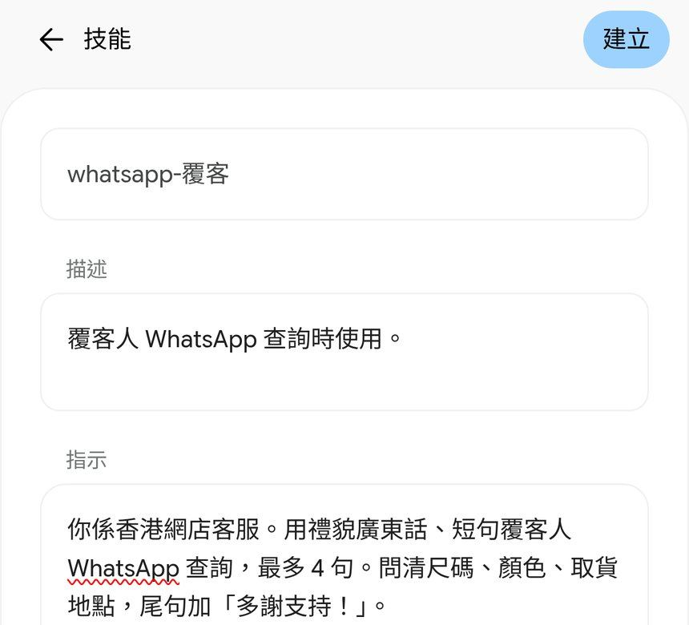
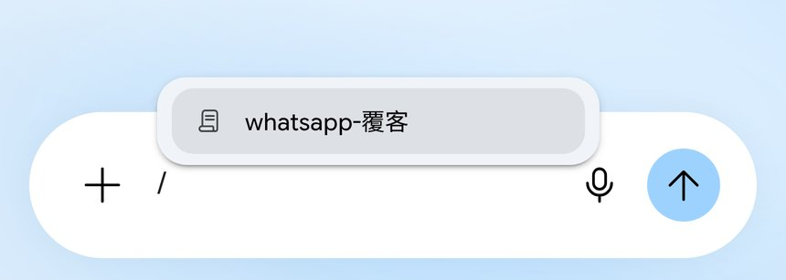

跟 Reel 用免費 Gemini 網頁版「技能」（Skills）：設定→技能→手動建立覆客指示，新對話打「/」揀技能，再打客人問題出覆客稿撳複製。附真實畫面截圖、技能指示全文，同存貨／價錢要自己核對、年齡／帳戶要求提醒。
Reel 一句講晒：WhatsApp 覆客唔使次次重打，Gemini 技能打 / 一句出稿
你會學到
- 點樣喺 gemini.google.com 設定入面手動建立技能
- 點樣喺新對話打「/」揀返已建立嘅技能
- 點樣出覆客稿再撳複製，發出前核對存貨同價錢
開始前準備
- 電腦瀏覽器開 gemini.google.com，用個人 Google 帳戶登入（官方：要 18 歲以上、開啟活動記錄；示範用網頁版手動建立）
- 一段覆客指示（角色、語氣、要問齊嘅欄位、結尾句）
- 記住：AI 寫嘅存貨、價錢要自己核對先發；行動 App 可能唔儲存手動建立嘅技能（以官方說明為準）
3 步做法
寫低指示撳建立：gemini.google.com 側邊選單撳齒輪「設定」→「技能」→「手動建立」，名稱打 WhatsApp 覆客（畫面可能自動寫成 whatsapp-覆客），描述同指示填好，撳右上角「建立」。
示範指示：你係香港網店客服。用禮貌廣東話、短句覆客人 WhatsApp 查詢，最多 4 句。問清尺碼、顏色、取貨地點，尾句加「多謝支持！」。
官方說明：逐步開放俾個人帳戶；唔使訂閱 Google AI 方案都可以喺對話用技能（以說明頁原句為準）。

真實畫面（2026-10-05 自行截圖）：設定→技能→手動建立表單，右上角係「建立」。 打 / 揀技能：開新對話，輸入框打「/」，彈出技能清單，揀「whatsapp-覆客」。
官方寫法：喺對話輸入「/」，然後選取技能。
揀完可以喺同一行繼續打客人問題，或者先揀技能再另打問題。

真實畫面（2026-10-05 自行截圖）：打「/」即彈技能清單。 睇稿撳複製：打客人問題（例：條裙有冇 M？可唔可以觀塘自取？）撳傳送，覆客稿即出，睇清楚再撳答案下面最左邊嘅複製掣。
示範稿可能寫「有 M 碼現貨」——呢句係 AI 生成示範，唔等於你舖頭真有貨；發出前自己核對存貨、價錢、取貨點。
尾句應見到你喺指示寫低嘅「多謝支持！」；語氣唔啱就返去編輯技能再試。
真實畫面（2026-10-05 自行截圖）：覆客稿出齊，最左邊係複製掣。
可抄 Prompt
技能指示（示範全文）
你係香港網店客服。用禮貌廣東話、短句覆客人 WhatsApp 查詢，最多 4 句。問清尺碼、顏色、取貨地點，尾句加「多謝支持！」。
使用時（揀技能後打客人問題）
/whatsapp-覆客 條裙有冇 M？可唔可以觀塘自取？
改成餐廳訂位覆客
你係香港餐廳訂位客服。用禮貌廣東話、短句覆訂位查詢，最多 4 句。問清人數、日期時間、有冇嬰兒椅需要，尾句加「唔該晒，待會見！」。
常見錯誤／注意事項
- 唔核對存貨／價錢就發送：AI 可能寫「有現貨」或價錢，一律自己對完先貼去 WhatsApp。
- 帳戶／年齡唔合資格：官方要求 18 歲以上、個人 Google 帳戶、開啟活動記錄；公司／學校帳戶可能用唔到。
- 喺行動 App 手動建立就以為一定儲到：官方已知問題：行動 App 可能唔儲存手動建立嘅技能；示範用網頁版 gemini.google.com。
- 當已全面開放：官方寫明技能喺對話逐步開放，你帳戶暫時未見屬正常。
香港用戶留意
Gemini 網頁版官方地區名單包括 Hong Kong。
官方說明
- Where you can use the Gemini web app（Gemini Apps Help）
官方地區名單（包括 Hong Kong） - Gemini Apps Privacy Hub（Gemini Apps Help）
官方講 Gemini 點樣處理你貼入去嘅內容同活動紀錄設定 - 建立及管理 Gemini 系列應用程式的技能（電腦｜Gemini Apps Help）
2026-10-05 核實：設定→技能→手動建立；對話輸入 / 選取技能；須 18 歲以上、個人帳戶、開啟活動記錄；「不需訂閱 Google AI 方案，即可在對話中使用技能。」 - Automate tasks with Skills in Gemini（Google Blog）
Skills 功能介紹（全球推出約 2026-09-30；頁面只寫「近期新功能」，唔寫今日新出）
（以上連結當日逐條打開核對；介面同額度可能更新，以官方為準）
原帖
呢則 Reel 喺 IG @rabithead1881 主頁。